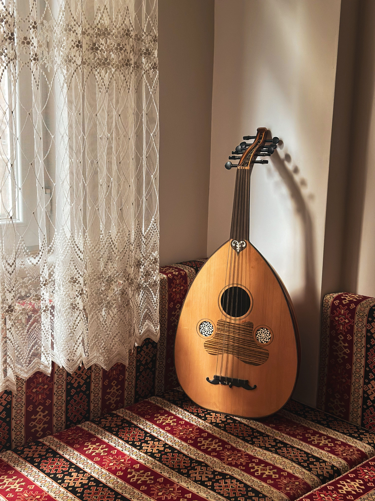

You remember to use disrection, very professional of you! You walk through the castle to Prince's bedroom. His chambers appear normal, except for a lute oddly placed under his bed.
You pick up the instrument and notice the strings are broken. As you go to throw it away a piece of paper slips out.
It's a note and it reads, "Fools Gold Tavern".
Let's hope its not prophetic.
